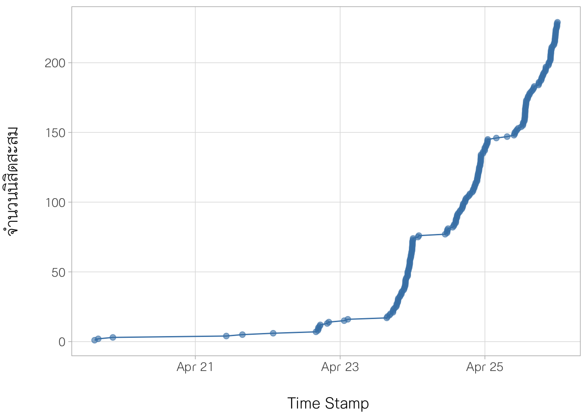
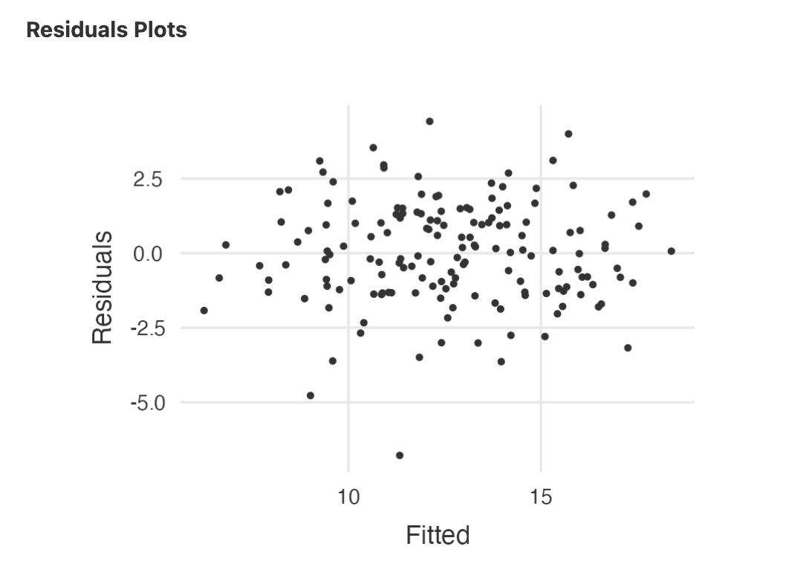
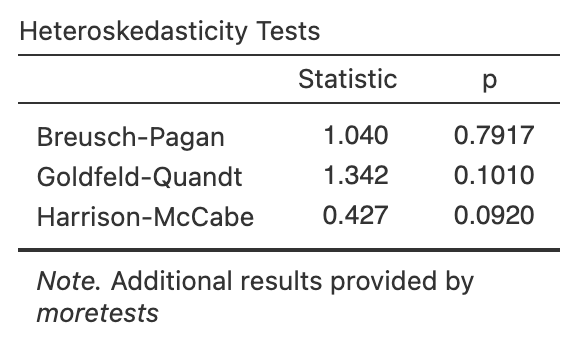
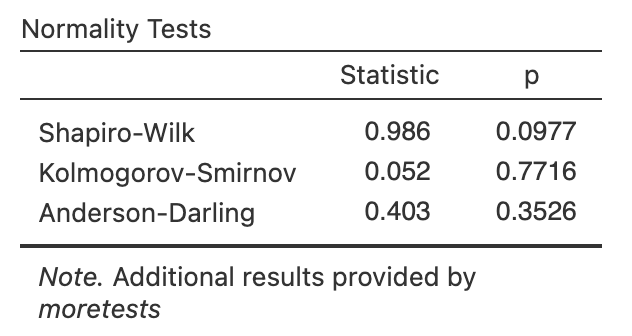
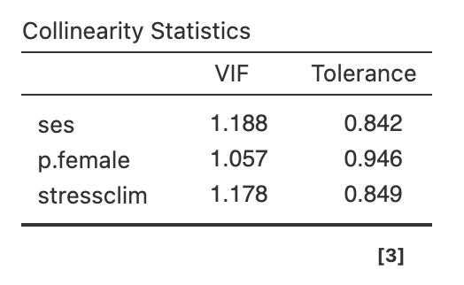

เนื้อหาส่วนนี้เป็นเฉลยการบ้านเรื่อง multiple regression I รายละเอียดมีดังนี้
1. ภาพรวมของการทำกิจกรรม
update วันที่ 26 เมษายน 2566 (หลังปิดการรับคำตอบ) มีนิสิตเข้ามาทำการบ้านรวม 229 คน รูป 1 แสดงแนวโน้มการทำการบ้านของนิสิตในระหว่างวันที่ 20 - 25 เมษายน 2566
รูป 1 แนวโน้มการทำการบ้านของนิสิตในระหว่างวันที่ 20 - 25 เมษายน 2566
2. เฉลยการบ้าน
สถานการณ์
นักวิจัยท่านหนึ่งดำเนินการเก็บรวบรวมข้อมูลของโรงเรียน โดยสุ่มตัวอย่างโรงเรียนมาจำนวน 160 โรงเรียน จากประชากรโรงเรียนในภูมิภาค A ของประเทศ
กำหนดชุดข้อมูล school.xlsx ตามลิงค์ด้านล่าง
https://docs.google.com/spreadsheets/d/1FWjss_GcqV5sHbppb3bbzRf-0-vTJMrl/edit?usp=share_link&ouid=118010069578157348024&rtpof=true&sd=true
คำอธิบายข้อมูล
ชุดข้อมูล school.xlsx ประกอบด้วยข้อมูลระดับโรงเรียนของตัวแปร 4 ตัว คือ
1. ตัวแปรตาม mathach = ค่าเฉลี่ยคะแนนผลสัมฤทธิ์ทางการเรียนวิชาคณิตศาสตร์ของนักเรียนในโรงเรียน
2. ses = ค่าเฉลี่ยคะแนนเศรษฐานะ (socio-economic status: SES) ของครอบครัวนักเรียนในโรงเรียน (คะแนน ses นี้มีหน่วยเป็นคะแนนมาตรฐาน Z)
3. p.female = ร้อยละของนักเรียนเพศหญิงในโรงเรียน
4. stressclim = บรรยากาศความเครียดในการเรียนของนักเรียนในโรงเรียน (คะแนน ses นี้มีหน่วยเป็นคะแนนมาตรฐาน Z)

รูป 2 ชุดข้อมูล schooldat
หากผู้วิเคราะห์วางแผนที่จะวิเคราะห์ความสัมพันธ์ระหว่างตัวแปรตามคือ mathach กับตัวแปรอิสระที่เหลือทั้งหมดในชุดข้อมูล ขอให้นิสิตดำเนินการวิเคราะห์ดังกล่าวแล้วตอบคำถามต่อไปนี้
2.1 จงเขียนสมการถดถอยของการวิเคราะห์ในสถานการณ์ข้างต้น
คลิกที่ Module “Regression” แล้วเลือก “Linear Regression” จากนั่นนำตัวแปรตาม และตัวแปรอิสระเข้าในช่องที่กำหนดดังรูป จะได้ผลการวิเคราะห์หลักของการวิเคราะห์การถดถอย

รูป 3 การวิเคราะห์การถดถอยพหุด้วย jamovi
จากตาราง “Model Coefficients” จะได้ว่าสมการถดถอยเขียนได้เป็น
\(\hat{mathach} = 13.909 + 5.002ses - 0.024 p.female -0.827 stressclim\)
2.2 - 2.4 Upload ภาพของ Residual plot, Heteroskedasticity Tests, Normality tests, และ Collinearity Statistics
จากรูป 3 คลิกเลือกเมนู “Assumption Checks” จากนั้นคลิกเลือก bullet ดังแสดงในรูป 4

รูป 4 เมนู Assumption Checks
เมื่อเลือกตัวเลือกตามรูป 4 เรียบร้อยให้เลือกผลลัพธ์ Residual plot, Heteroskedasticity Tests, Normality tests, และ Collinearity Statistics ของสมการถดถอย \(\hat{mathach} = 13.909 + 5.002ses - 0.024 p.female -0.827 stressclim\) จะเป็นดังนี้
|  |  |
|  |  |
2.5 สมการถดถอยที่ประมาณได้มีปัญหาละเมิดข้อตกลงเบื้องต้นด้านใดบ้าง (ตอบได้มากกว่า 1 ข้อ)
เมื่อพิจารณา Residual plot, Heteroskedasticity Tests, Normality tests, และ Collinearity Statistics ในข้างต้น ไม่พบว่ามีหลักฐานบ่งชี้การละเมิดข้อตกลงเบื้องต้นตามตัวเลือกที่กำหนด ได้แก่ linearity, homoscedasticity, normality และ no multicollinearity ดังนั้นสรุปว่า สมการถดถอยที่ประมาณได้ไม่มีปัญหาการละเมิดข้อตกลงเบื้องต้น
2.6 สมการถดถอยที่ประมาณได้มีความเหมาะสมที่จะใช้ทำนาย/อธิบายความสัมพันธ์ที่พบในข้อมูลหรือไม่ เพราะเหตุใด
เหมาะสม ด้วยเหตุผล 2 ประการ ประการแรก คือไม่พบหลักฐานว่ามีการละเมิดข้อตกลงเบื้องต้นของการวิเคราะห์การถดถอย และประการที่สอง ค่าสัมประสิทธิ์การตัดสินใจของสมการถดถอยที่ประมาณได้มีค่าเท่ากับ 0.697 แสดงว่าสมการสามารถอธิบายความผันแปรใน mathach ได้คิดเป็นร้อยละ 69.7 ซึ่งอยู่ในระดับที่สูง
2.7 นักวิจัยสามารถใช้การวิเคราะห์การถดถอยในข้างต้นเพื่อสร้างข้อสรุปอ้างอิงไปยังประชากรของโรงเรียนในเขตพื้นที่ดังกล่าวได้หรือไม่ เพราะเหตุใด
จากสถานการณ์ที่กำหนดพบว่า นักวิจัยมีการใช้กระบวนการสุ่มเพื่อให้ได้มาซึ่งตัวอย่างของโรงเรียนภายในเขตพื้นที่ A และจากผลการตรวจสอบข้อตกลงเบื้องต้นไม่พบว่ามีการละเมิดข้อตกลงเบื้องต้น (โดยเฉพาะในด้านการแจกแจงแบบปกติ (normality) ของความคลาดเคลื่อนของสมการถดถอย) ดังนั้นจึงสามารถใช้ผลการวิเคราะห์ที่ได้เพื่อสร้างข้อสรุปอ้างอิงไปยังประชากรของโรงเรียนในเขตพื้นที่ A
2.8 จงแปลความหมายสัมประสิทธิ์ความชันแบบคะแนนดิบ (raw regression coefficient) ของตัวแปรอิสระ p.female
เนื่องจาก p.female คือร้อยละของของนักเรียนเพศหญิงในโรงเรียน และสัมประสิทธิ์ความชันของตัวแปรอิสระดังกล่าวมีค่าเท่ากับ -0.024 ดังนั้นสามารถแปลความหมายความชันดังกล่าวว่า เมื่อกำหนดให้ตัวแปรอิสระตัวอื่น ๆ คงที่ หากโรงเรียนมีนักเรียนเพศหญิงเพิ่มขึ้นร้อยละ 1.00 ผลสัมฤทธิ์ทางการเรียนคณิตศาสตร์ของโรงเรียนมีแนวโน้มลดลงโดยเฉลี่ย 0.024 คะแนน
2.9 จากสมการถดถอยข้างต้น นิสิตคิดว่าตัวแปร/ปัจจัยใดที่มีผลต่อคะแนนเฉลี่ยผลสัมฤทธิ์ทางการเรียนทางคณิตศาสตร์ของนักเรียนในโรงเรียนมากที่สุด และน้อยที่สุด เพราะเหตุใด
การตอบคำถามข้อนี้ผู้วิเคราะห์จะต้องเรียกผลการวิเคราะห์เพิ่มเติมได้แก่ ค่าสัมประสิทธิการถดถอยมาตรฐาน (standardized regression coefficients) โดยให้เลือกเมนู “Model Coefficients” แล้วคลิกเลือกที่ “Standardized estimate” ดังรูป 5

รูป 5 การเรียกผลการวิเคราะห์ standardized regression coefficients
เมื่อคลิกเลือกเรียบร้อยจะได้ผลลัพธ์เพิ่มเติมในตาราง “Model Coefficients” ดังรูป 6

รูป 6 ตาราง Model Coefficients
เมื่อพิจารณาค่าสัมประสิทธิ์การถดถอยมาตรฐาน (Stand. Estimate) พบว่า SES และ p.female เป็นตัวแปรที่มีผลต่อ mathach มากและน้อยที่สุด โดยมีค่าสัมประสิทธิ์การถดถอยมาตรฐานดังกล่าวเท่ากับ 0.664 และ -0.201 ตามลำดับ
2.10 จากสมการถดถอยข้างต้น มีตัวแปรอิสระที่มีผลทางลบต่อคะแนนผลสัมฤทธิ์ทางการเรียนหรือไม่ และมีตัวแปรอะไรบ้าง
พิจารณาจากสัมประสิทธิ์การถดถอยคะแนนดิบหรือมาตรฐานก็ได้ จะพบว่าตัวแปรที่มีค่าสัมประสิทธิ์ดังกล่าวเป็นลบได้แก่ p.female และ stressclim ดังนั้นตัวแปรอิสระที่มีผลทางลบต่อคะแนนผลสัมฤทธิ์ทางการเรียนมี 2 ตัวแปร ได้แก่ p.female และ stressclim